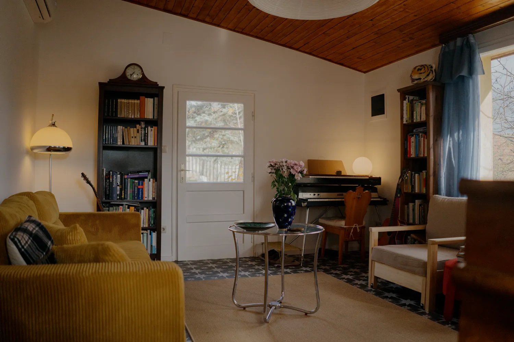

PSZICHOLÓGIAI MŰHELY
(fn.) A lelki és közösségi élet alaprétege. Az a sajátos minőség, amiben berendezkedünk, az életrend, amelyben a mindennapjainkat éljük: gondolataink, érzéseink, szokásaink és kapcsolataink együtt formált közege.
Szendrey-Nagy Olivér vagyok, pszichológus.
Abban segítek, hogy a hozzám fordulók otthonosan érezzék magukat az életükben.

Nem légüres térben élünk. Csak a saját kontextusunkban érthetjük meg magunkat, abban a viszonyrendszerben, amelyben a nehézségeink felmerülnek. Ennek kibontásához a felelősségünk és szabadságunk felfedezése elengedhetetlen. Ebben szeretnék segíteni. Dolgozom élethelyzeti és kapcsolati nehézségekkel, szorongással, döntésképtelenséggel, kiégéssel, gyásszal.
A hozzám legközelebb álló megközelítés a humanisztikus-egzisztenciális pszichológia és a rendszerszemlélet: az ember szorongással való szembenézése és kiteljesedésre való törekvése.
Tanulmányaimat Budapesten és Rómában végeztem, a Pázmány Péter Katolikus Egyetemen, a Károli Gáspár Református Egyetemen, a Budapesti Műszaki Egyetemen és a Libera Università Maria SS. Assuntán.
Képzésben lévő munka- és szervezet szakpszichológusként kis, közepes méretű szervezetekkel és vezetőkkel dolgozom. Helyzetre szabott megoldásokkal segítek, hogy a rend és a kreativitás egymást erősítve működjön és ne a másik ellenében. Projektmenedzserként több csapatot kísértem, így a belső, céges működést is ismerem.
Alkotó ember vagyok, művészeti projektekkel is foglalkozom, dalszerző-énekesként, zeneszerzőként, filmes szakemberként.
Klienseket online és Nagymaroson fogadok.
Első lépésként foglalj egy díjmentes online bemutatkozó beszélgetést.
HATÁLYOS: 2026. NOVEMBER 24.
Ez a tájékoztató a lelkiklima.hu weboldal használata, a kapcsolatfelvétel és az időpontfoglalás során kezelt személyes adatokról szól. A konzultációk során keletkező szakmai dokumentációról az első alkalmon külön tájékoztatás és hozzájárulás történik.
Szendrey-Nagy Olivér egyéni vállalkozó, pszichológus
Székhely: 2626 Nagymaros, Aranyos utca 16.
Adószám: 40702225-1-25
E-mail: oliver@lelkiklima.hu
Telefon: +36 30 568 9577
Kérjük, a kapcsolatfelvétel során ne írj részletes egészségügyi információt. Erre az első beszélgetésen van mód.
| Szolgáltató | Szerep |
|---|---|
| Google Ireland Ltd. | e-mail (Google Workspace), naptár, Google Meet, Google Analytics, Google Ads |
| Cal.com, Inc. | időpontfoglalás |
| GitHub, Inc. | a weboldal tárhelye |
| Web3Forms | az űrlap üzeneteinek továbbítása |
Az Egyesült Államokban működő szolgáltatók esetében az adattovábbítás az EU és az USA közötti adatvédelmi keretre vonatkozó európai bizottsági megfelelőségi határozat, illetve általános szerződési feltételek alapján történik.
Az adatokat más részére nem továbbítjuk, és nem értékesítjük.
Kérésedet az oliver@lelkiklima.hu címre küldheted, legfeljebb egy hónapon belül választ kapsz.
Panasszal a Nemzeti Adatvédelmi és Információszabadság Hatósághoz fordulhatsz (1055 Budapest, Falk Miksa utca 9-11., postacím: 1363 Budapest, Pf. 9., ugyfelszolgalat@naih.hu, www.naih.hu), vagy bírósághoz.
Írhatsz, vagy foglalhatsz egy tizenötperces bemutatkozó beszélgetést. Díjmentes, és semmire nem kötelez.
A beszélgetésen elmondod, mi hozott ide. Kiderül, hogy a közös munka jó irány-e. Ha igen, egyeztetünk időpontot az első alkalomra.
Bemutatkozó beszélgetés foglalása